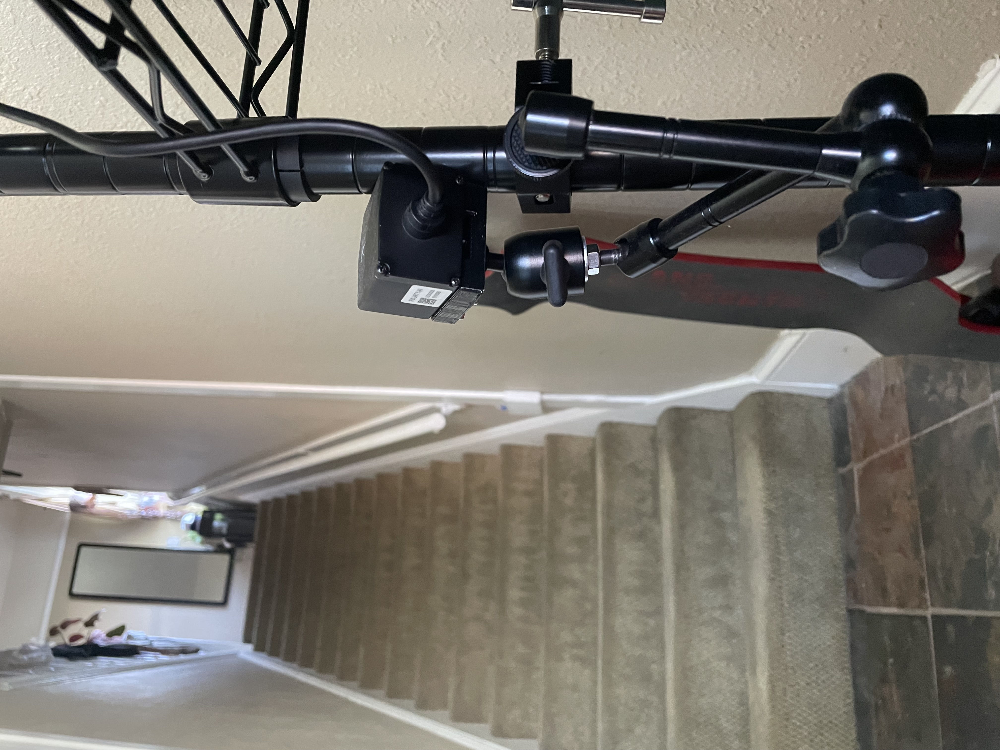
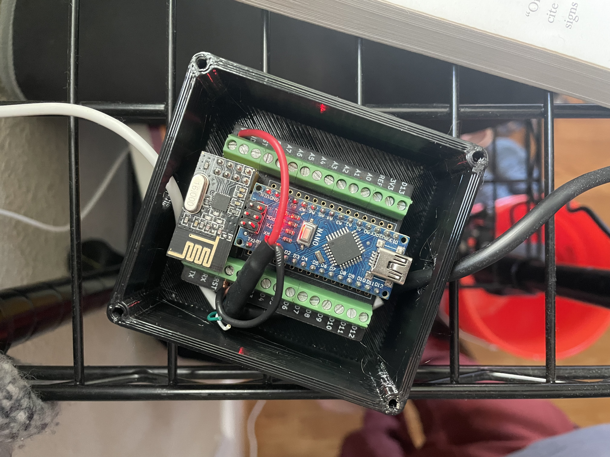
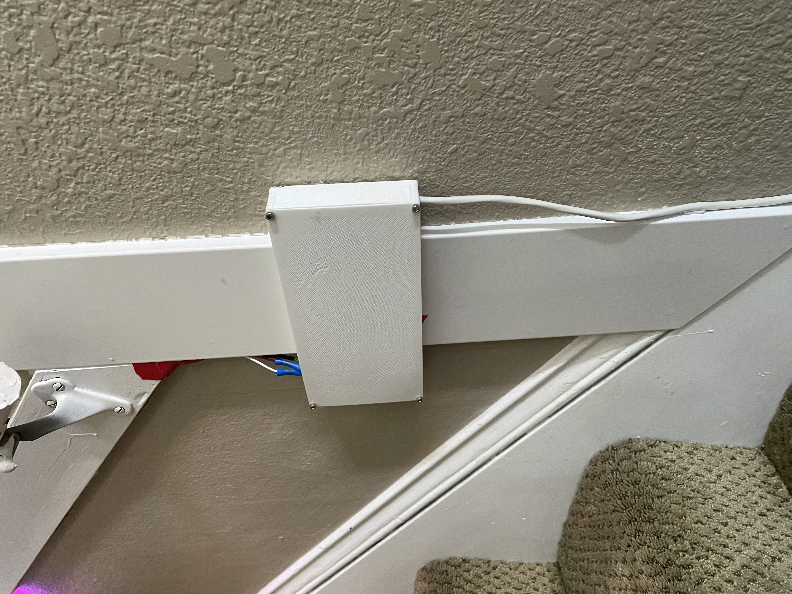
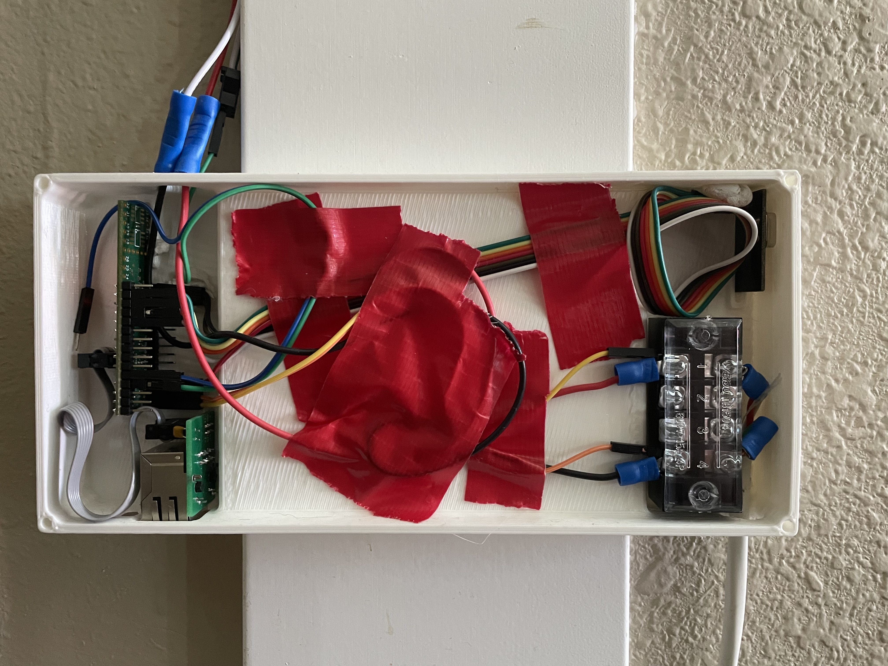

Companion Stairlight
This project was born of frustration. Our very old, strangely wired house has the stairwell light switch at the bottom of the stairs. Late at night, that meant walking down in the dark, turning on the light, doing the thing, then turning it off and heading back up in darkness again. Usually with full arms, which meant putting everything down just to flip a switch. It was a pain, so I built a stair light that follows you automatically.





×
❮
❯